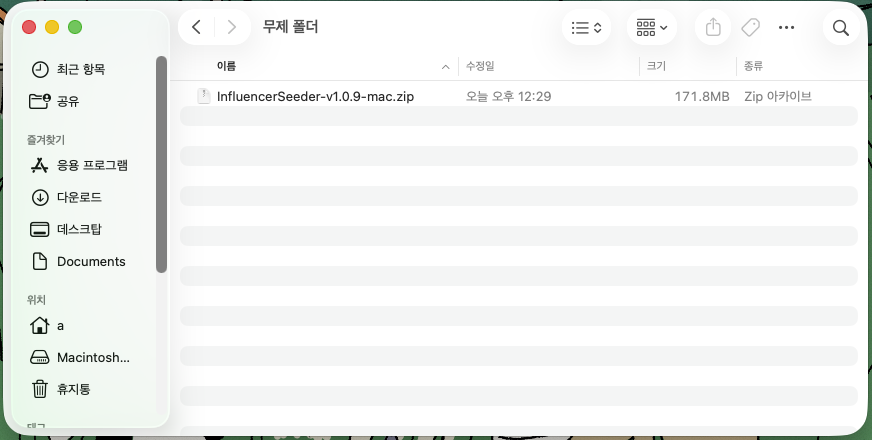
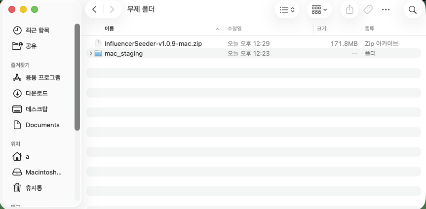
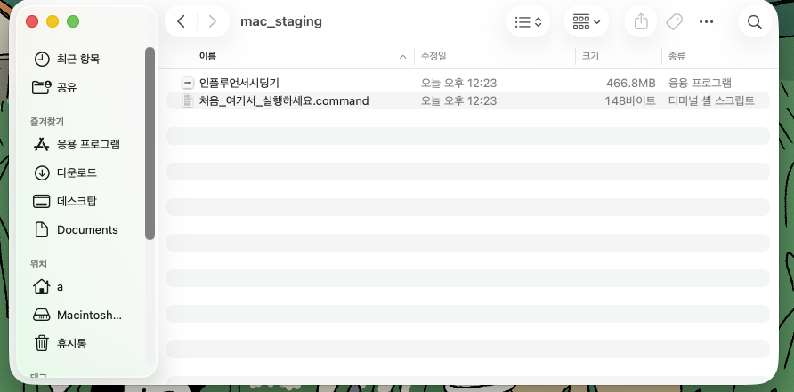
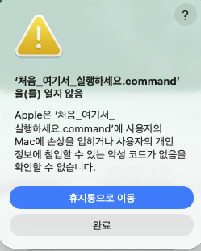
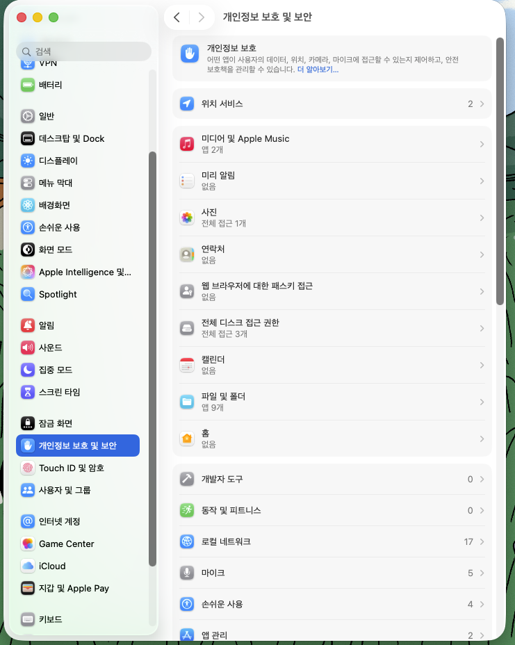
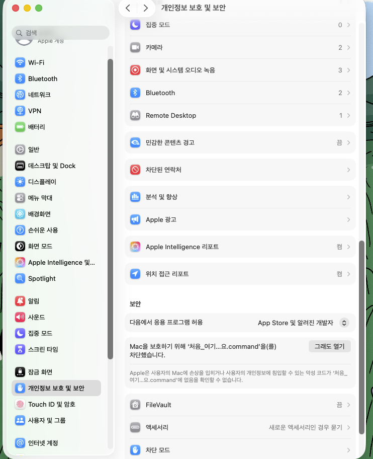
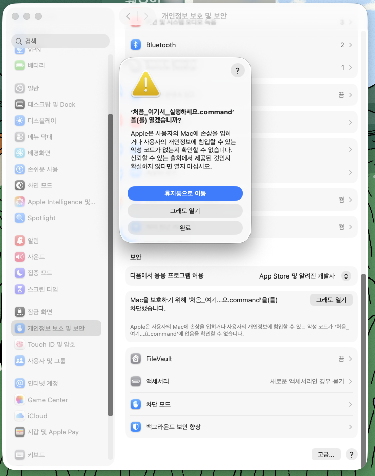
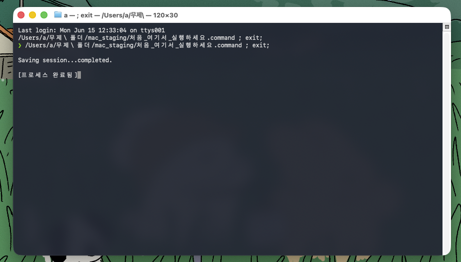

macOS 보안 정책으로 인해 처음 실행 시 아래 안내를 따라주세요.
한 번만 설정하면 이후에는 바로 실행됩니다.
설치 순서
GitHub Releases에서 InfluencerSeeder-vX.X.X-mac.zip 파일을 다운로드합니다.

같은 폴더에 mac_staging 폴더가 생성됩니다.

• 인플루언서시딩기 — 앱 본체
• 처음_여기서_실행하세요.command — 최초 1회 실행용 파일

아래와 같이 "열지 않음" 경고창이 뜹니다. 완료를 눌러 닫으세요.
이 경고는 정상입니다 — 다음 단계에서 직접 허용합니다.

Apple 메뉴(좌측 상단 🍎) → 시스템 설정 → 좌측 목록에서 개인 정보 보호 및 보안을 클릭합니다.

화면을 아래로 스크롤하면 "Mac을 보호하기 위해 '처음_여기...command'을(를) 차단했습니다" 문구와 함께 "그래도 열기" 버튼이 보입니다. 클릭합니다.

경고 팝업이 한 번 더 뜨면 "그래도 열기"를 클릭합니다. Mac 비밀번호 입력이 요구될 수 있습니다.

아래와 같이 터미널 창이 잠깐 나타났다가 사라지면서 인플루언서시딩기 앱이 실행됩니다.
다음부터는 앱을 바로 더블클릭해서 실행하면 됩니다.
